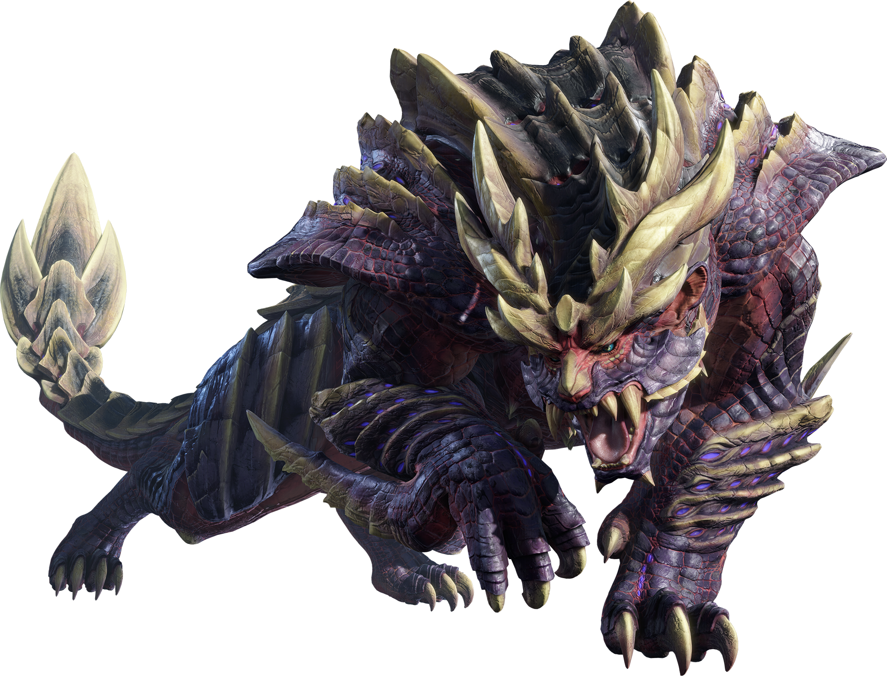
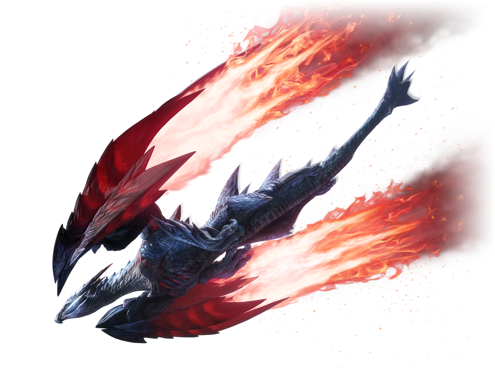
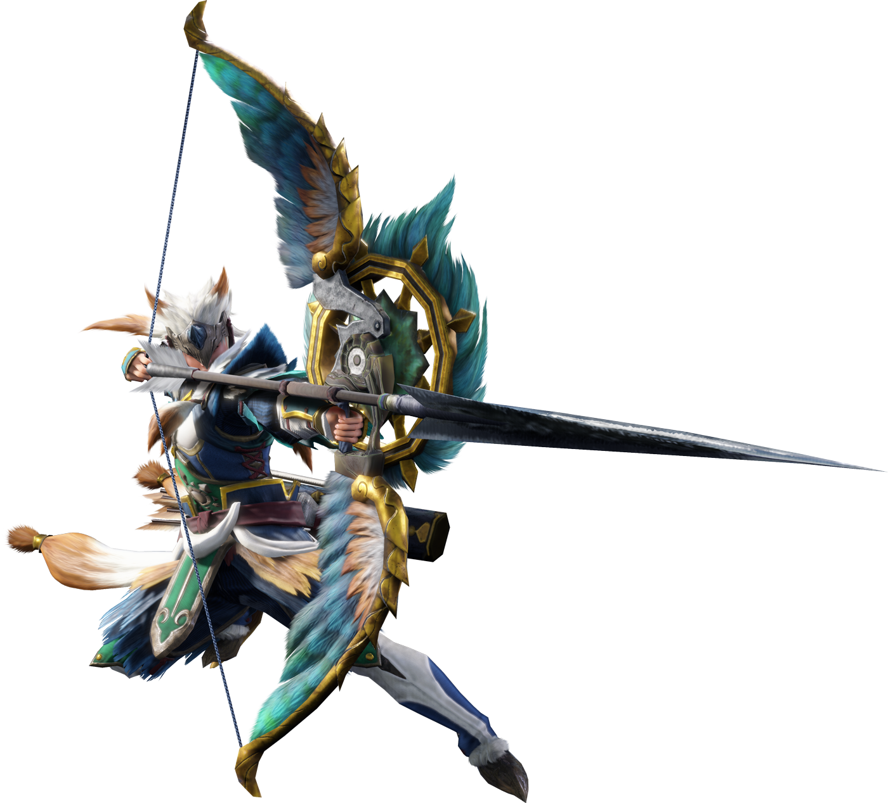

Information

Monster Hunter Rise is an action role-playing game developed and published by Capcom for the Nintendo Switch. It is the sixth mainline installment in the Monster Hunter series and was released worldwide in March 2021. A Microsoft Windows version was released in January 2022. An expansion, Monster Hunter Rise: Sunbreak was released on June 30, 2022 for both platforms.
Rise follows many of the new conventions established in World while also introducing new features and mechanics, including a new animal companion called a Palamute that can be used to ride across the map or into battle, and the use of Wirebugs to traverse the world and mount and ride certain monsters. The game received generally positive reviews upon release with critics praising the gameplay and its expansion of the mechanics introduced in World. It has sold more than 10 million copies worldwide since launch, making it the second best-selling game in the series.
Monsters
Monsters are the fearsome creatures that will atttack the village if they are not hunted which is the way the life in Kamura Village theres only one rule that they live in its either Hunt or be Hunted
Magnamalo
">
Magnamalo is the flagship monster of this game.
Its face exudes a fearsome malice, and its hide is as tough as armor, as if it were the physical manifestation of the grudges of fallen warriors.
The purple gas that rises from its body when it eats other monsters is called "Hellfire," and it makes Magnamalo's already ferocious attacks even more destructive.
Crimson Glow Valstrax

A mutant Valstrax fearsomely dubbed the "Crimson Glow."
This elder dragon typically secludes itself in the upper atmosphere, but it has been driven mad by its own rampant energy, causing it to lash out at anything in its sight.
Once it sights its prey, it swoops down, trampling them beneath its shifting wingblades.
Apex Zinogre

A Zinogre so mighty, it was crowned an Apex.
Its body is covered in scars and wounds as if it had been caught in a storm, and it's seemingly always dominated by wrath and terror.
Its forelegs—and their every strike—brim with ferocious sparks.
Weapons
There are a lot variations of weapons that you will master to use to hunt the fearsome monsters
Great Sword

his massive blade cleaves in a wide arc with terrifying might, and can even be used to guard in a pinch.
The power of a full Charged Slash is overwhelming.
Long Sword

A sharp weapon that charges up the Spirit Gauge as you cut into your prey,
and can unleash powerful Spirit Blade attacks.
Also allows for technical dodge and counterattack combat.
Bow

A weapon built for ranged attacks.
Affords high mobility. Fires Arc Shots to cover for allies or Power Shots that hit hard.
Coatings can be applied to inflict status effects.